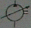
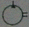
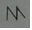
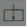
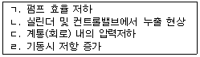

지게차운전기능사 (2007-04-01 기출문제)
1. 부동액의 주요성분이 될 수 없는 것은?
- 그리스
- 글리세린
- 메탄올
- 에틸렌글리콜
(정답률: 67%)

2. 분사노즐의 요구조건으로 틀린 것은?
- 고온, 고압의 가혹한 조건에서 장기간 사용할 수 있을 것
- 분무를 연소실의 구석구석까지 뿌려지게 할 것
- 연료의 분사 끝에서 후적이 일어나게 할 것
- 연료를 미세한 안개 모양으로 분사하여 쉽게 착화하게 할 것
(정답률: 70%)
3. 실린더 벽이 마멸되었을 때 발생 되는 현상은?
- 기관의 회전수가 증가한다.
- 오일의 소모량이 증가한다.
- 열효율이 증가한다.
- 폭발압력이 증가한다.
(정답률: 80%)
4. 기관 과열의 주요 원인이 아닌 것은?
- 라디에이터 코어의 막힘
- 냉각장치 내부의 물때 과다
- 냉각수의 부족
- 오일량 과다
(정답률: 81%)
5. 배기터빈 과급기에서 터빈축의 베어링에 급유하는 것으로 맞는 것은?
- 그리스로 윤활
- 기관오일로 급유
- 오일리스베어링 사용
- 기어오일을 급유
(정답률: 44%)
6. 점도지수가 큰 오일의 온도변화에 따른 점도변화는?
- 크다.
- 작다.
- 불변이다.
- 온도와 점도관계는 무관하다.
(정답률: 55%)
7. 디젤 기관에서 연료 라인에 공기가 혼입 되었을 때 현상으로 맞는 것은?
- 분사압력이 높아진다.
- 디젤 노크가 일어난다.
- 연료 분사량이 많아진다.
- 기관 부조 현상이 발생된다.
(정답률: 60%)
8. 디젤 기관에서 흡입공기 압축 시 압축온도는 약 얼마인가?
- 200 ~ 300℃
- 500 ~ 550℃
- 1500 ~ 2000℃
- 900 ~ 950℃
(정답률: 71%)
9. 건설기계 정비에서 기관을 시동한 후 정상운전 가능 상태를 확인하기 위해 운전자가 가장 먼저 점검해야 할 것은?
- 속도계
- 엔진 오일량
- 냉각수 온도계
- 오일 압력계
(정답률: 53%)
10. 기관을 점검하는 요소 중 디젤기관과 관계없는 것은?
- 예열장치
- 점화장치
- 연료장치
- 압축장치
(정답률: 65%)
11. 노킹이 발생 되었을 때 디젤기관에 미치는 영향이 아닌 것은?
- 기관의 rpm이 높아진다.
- 연소실 온도가 상승된다.
- 엔진에 손상이 발생할 수 있다.
- 출력이 저하된다.
(정답률: 69%)
12. 기관의 시동을 보조하는 장치가 아닌 것은?
- 실린더의 감압장치
- 히트레인저
- 과급장치
- 공기 예열장치
(정답률: 41%)
13. 건설기계에서 윈드시일드 와이퍼를 작동 시키는 형식으로 가장 일반적으로 사용하는 것은?
- 압축 공기식
- 기계식
- 진공식
- 전기식
(정답률: 45%)
14. 다음 중 교류 발전기의 부품이 아닌 것은?
- 다이오드
- 슬립링
- 스테이터 코일
- 전류 조정기
(정답률: 44%)
15. 축전지의 자기방전의 원인이 아닌 것은?
- 전해액에 포함된 불순물이 국부전지를 구성하기 때문에
- 탈락한 극판 작용물질이 축전지 내부에 퇴적되기 때문에
- 음극판의 작용물질이 황산과의 화학작용으로 황산납이 되기 때문에
- 전해액의 양이 많아짐에 따라 용량이 커지기 때문에
(정답률: 62%)
16. 축전지에 관한 설명에서 옮은 것은?
- 전해액이 자연 감소된 축전지의 경우 증류수를 보충하면 된다.
- 축전지의 방전에 계속되면 전압은 낮아지고 전해액의 비중은 높아지게 된다.
- 축전지의 용량을 크게 하려면 별도의 축전지를 직렬로 연결하면 된다.
- 축전지를 보관할 때에는 되도록 방전 시키는 것이 좋다
(정답률: 47%)
17. 전류의 자기작용을 응용한 것은?
- 전구
- 축전지
- 예열플러그
- 발전기
(정답률: 63%)
18. 시동스위치를 시동(ST)위치로 했을 때 솔레노이드 스위치는 작동되나 기동 전동기는 작동되지 않은 원인과 관계없는 것은?
- 축전지 방전
- 시동 스위치 불량
- 엔진 내부 피스톤 고착
- 기동전동기 브러시 손상
(정답률: 43%)
19. 듀브리스 타이어의 장점이 아닌 것은?
- 펑크 수리가 간단하다.
- 못이 박혀도 공기가 잘 새지 않는다.
- 고속 주행하여도 발열이 적다
- 타이어 수명이 길다
(정답률: 44%)
20. 휠로더의 휠허브에 있는 유성기어 장치에서 유성기어가 핀과 용착 되었을 때 일어날 수 있는 현상은?
- 바퀴의 회전속도가 빨라진다.
- 바퀴의 회전속도가 늦어진다.
- 바퀴가 돌지 않는다.
- 관계없다.
(정답률: 47%)
21. 지게차의 체인장력 조정법으로 틀린 것은?
- 좌우체인이 동시에 평행한가 확인한다.
- 포크를 지상에서 조금 올린 후 조정한다.
- 손으로 체인을 눌러보아 양쪽이 다르면 조정 너트로 조정한다.
- 조정 후 록크 너트를 풀어진다.
(정답률: 57%)
22. 자동변속기가 장착된 건설기계에서 엔진은 회전하나 장비가 움직이지 않을 때 점검사항으로 옮지 않은 것은?
- 트랜스미션의 에어브리더 점검
- 트랜스미션의 오일량 점검
- 변속레버(인히비트 스위치) 점검
- 컨트롤밸브의 오일 압력 점검
(정답률: 34%)
23. 무한 궤도식 굴삭기의 동력 전달 계통과 관계가 없는 것은?
- 주행모터
- 최종 감속 기어
- 유압펌프
- 추진축
(정답률: 40%)
24. 수송식 변속기가 장착된 장비에서 클러치 페달에 유격을 두는 이유는?
- 클러치 용량을 크게 하기 위해
- 클러치의 미끄럼을 방지하기 위해
- 엔진 출력을 증가시키기 위해
- 제동 성능을 증가시키기 위해
(정답률: 78%)
25. 불도저를 정지할 때 사항으로 틀린 것은?
- 엔진속도를 저속 공회전으로 한다.
- 변속기 선택레버를 중립으로 한다.
- 삽날을 높이 든다.
- 브레이크를 밟고 정지시킨다.
(정답률: 79%)
26. 하부 롤러, 링크 등 트랙부품이 조기 마모되는 원인으로 가장 적절한 것은?
- 일반 객토에서 작업을 하였을 대
- 트랙 장력 실린더에 그리스가 누유 될 때
- 겨울철에 작업을 하였을 때
- 트랙장력이 너무 팽팽했을 때
(정답률: 70%)
27. 건설기계검사의 종류가 아닌 것은?
- 신규등록검사
- 정기검사
- 구조변경검사
- 예비검사
(정답률: 73%)
28. 교통사고로 중상의 기준에 해당하는 것은?
- 2주 이상의 치료를 요하는 부상
- 1주 이상의 치료를 요하는 부상
- 3주 이상의 치료를 요하는 부상
- 4주 이상의 치료를 요하는 부상
(정답률: 44%)
29. 시ㆍ도지사는 수시검사를 명령하고자 하는 때에는 수시검사를 받아야 할 날부터 며칠 이전에 건설기계 소유자에게 명령서를 교부하여야 하는가?
- 7일
- 10일
- 15일
- 1월
(정답률: 49%)
30. 차마의 통행방법으로 도로의 중앙이나 좌측부분을 통행할 수 있는 경우로 가장 적절한 것은?
- 통행이 불편할 때
- 도로에 물이 고여 있어 불편할 때
- 도로가 잡상인 등으로 혼잡할 때
- 도로의 파손, 도로공사 또는 우측 부분을 통행 할 수 없을 때
(정답률: 87%)
31. 건설기계 조종 중 재산 피해를 일으켰을 때 피해금액 10만원마다 면허 효력정지 기간은 며칠인가?
- 1일
- 2일
- 3일
- 4일
(정답률: 60%)
32. 도로교통법상 안전표지의 종류가 아닌 것은?
- 주의표지
- 규제표지
- 안심표지
- 보조표지
(정답률: 74%)
33. 도로교통법에 위반이 되는 것은?
- 밤에 교통이 빈번한 도로에서 전조등을 계속 하향했다.
- 낮에 어두운 터널 속을 통과할 때 전조등을 켰다
- 소방용 방화 물통으로부터 6미터지점에 주차하였다
- 노면이 얼어붙은 곳에서 최고 20/100을 줄인 속도로 운행하였다.
(정답률: 60%)
34. 다음 중 정차 및 주차가 금지되어 있지 않은 장소는?
- 횡단보도
- 교차로
- 경사로의 정상부근
- 건널목
(정답률: 76%)
35. 다음 중 건설기계 임시운행 사유가 아닌 것은?
- 확인검사를 받기 위하여 건설기계를 검사장소로 운행하는 경우
- 신규등록검사를 받기 위하여 건설기계를 검사장소로 운행하고자 할 때
- 신개발 건설기계를 시험, 연구의 모적으로 운행하고자 할 때
- 건설기계형식승인을 받고자 할 때
(정답률: 46%)
36. 건설기계사업을 영위하고자 하는 자는 누구에서 신고하여야 하는가?
- 시ㆍ도지사
- 전문건설기계정비업자
- 건설교통부장관
- 건설기계폐기업자
(정답률: 83%)
37. 유압펌프의 흡입구에서 캐비테이션를 방지하기 위한 방법으로 적절하지 않은 것은?
- 흡입구의 양정을 1m 이하로 한다.
- 흡입관의 굵기를 유압 본체의 연결구의 크기와 같은 것을 사용한다.
- 펌프의 운전속도를 규정 속도 이상으로 하지 않는다.
- 하이드로릭 실린더에 부하가 걸리지 않도록 한다.
(정답률: 27%)
38. 다음 중 유압실린더의 내부 구성품이 아닌 것은?
- 피스톤
- 쿠션기구
- 유압밴드
- 실린더
(정답률: 30%)
39. 가변 용량형 유압펌프의 기호 표시는?




(정답률: 72%)
40. 밀폐된 액체의 일부에 힘을 가했을 때 맞는 것은?
- 모든 부분에 같게 작용한다.
- 모든 부분에 다르게 작용한다.
- 홈 부분에만 세게 작용한다.
- 돌출부에는 세게 작용한다.
(정답률: 71%)
41. 작업 중 유압펌프 유량이 필요하지 않게 되었을 때 오일을 저압으로 탱크에 귀환시키는 회로는?
- 시퀸스회로
- 어큐뮬레이션회로
- 블리드오프회로
- 언로드회로
(정답률: 55%)
42. 다음 보기 항에서 유압계통에 사용되는 오일의 점도가 너무 낮을 경우 나타날 수 있는 현상으로 모두 맞는 것은?

- ㄱ, ㄴ, ㄷ
- ㄱ, ㄴ, ㄹ
- ㄴ, ㄷ, ㄹ
- ㄱ, ㄷ, ㄹ
(정답률: 55%)
43. 유압장치 내의 압력을 일정하게 유지하고, 최고압력을 제한하면 회로를 보호해주는 밸브는?
- 릴리프 밸브
- 체크 밸브
- 제어 밸브
- 로터리 밸브
(정답률: 67%)
44. 유량 제어 밸브가 아닌 것은?
- 속도제어 밸브
- 체크 밸브
- 교축 밸브
- 급속배기 밸브
(정답률: 40%)
45. 유압장치에 사용되는 것으로 회전운동을 하는 것은?
- 유압실린더
- 유압 피스톤 펌프
- 유압 모터
- 축압기
(정답률: 74%)
46. 유압장치에서 오일탱크의 구비조건이 아닌 것은?
- 유면은 적정위치 “F”에 가깝게 유지하여 한다.
- 발생한 열을 발산할 수 있어야 한다.
- 공기 및 이물질을 오일로부터 분리할 수 있어야 한다.
- 탱크의 크기가 정지할 때 되돌아오는 오일량의 용량과 동일하게 한다.
(정답률: 55%)
47. 작업환경 개선과 가장 거리가 먼 것은?
- 채광을 좋게 한다.
- 조명을 밝게 한다.
- 신품의 부품으로 모두 교환한다.
- 소음을 줄인다.
(정답률: 71%)
48. 작업장에서 수공구 재해예방 대책으로 잘못된 사항은?
- 결함이 없는 안전한 공구 사용
- 공구의 올바른 사용과 취급
- 공구는 항상 오일을 바른 후 보관
- 작업에 알맞은 공구 사용
(정답률: 87%)
49. 기동하고 있는 원동기에서 화재가 발생하였다. 그 소화 작업으로 가장 먼저 취해야 할 안전한 방법은?
- 원인분석을 하고, 모래를 뿌린다.
- 경찰에 신고한다.
- 점화원을 차단한다.
- 원동기를 가속하여 팬의 바람을 끈다.
(정답률: 74%)
50. 일반 작업환경에서 지켜야 할 안전사항으로 맞지 않는 것은?
- 안전모를 착용한다.
- 해머는 반드시 장갑을 끼고 작업한다.
- 주유시는 시동을 끈다.
- 고압 전기에는 적색 표지판을 부착한다.
(정답률: 77%)
51. 렌치 작업시의 주위사항 설명 중 틀린 것은?
- 너트보다 큰 치수를 사용한다.
- 너트에 렌치를 깊이 물린다.
- 높거나 좁은 위치에서는 몸의 자세가 안정되게 하고 작업한다.
- 렌치를 해머로 두드려서는 안 된다.
(정답률: 80%)
52. 작업시 보안경을 반드시 사용해야 하는 것으로 적합하지 않은 것은?
- 장비 밑에서 정비 작업할 때
- 인체에 해로운 가스가 발생하는 작업장
- 철분, 모래 등이 날리는 작업장
- 전기용접 및 가스용접 작업장
(정답률: 70%)
53. 벨트를 풀리에 걸때는 어떤 상태에서 걸어야 하는가?
- 회전을 정지시킨
- 저속으로 회전할 때
- 중속으로 회전할 때
- 고속으로 회전할 때
(정답률: 81%)
54. 크레인으로 인양시 줄걸이 작업으로 올바른 것은?
- 와이어로프 등은 크레인 혹을 편심시켜 걸어야 한다.
- 하물이 혹이 잘 걸렸는지 확인 후 작업한다.
- 밑에 있는 물체를 인양할 때 위에 물체가 있는 상태로 행한다.
- 매다는 각도는 60도 이상으로 크게 하여야 한다.
(정답률: 72%)
55. 사고의 직접원인으로 가장 적합한 것은?
- 유전적인 요소
- 성격결함
- 사회적 환경요인
- 불안전한 행동 및 상태
(정답률: 86%)
56. 안전관리상 건설 현장에 부착할 안전표지의 종류로 가장거리가 먼 것은?
- 경고표시
- 금지표시
- 안내표시
- 구역표시
(정답률: 64%)
57. 한전에서 고압이상의 전선로에 대하여 안전거리를 규정하고 있다. 다음 중 154000V의 송전선로에 대한 안전거리로서 올바른 것은?
- 350cm
- 160cm
- 75cm
- 30cm
(정답률: 48%)
58. 도시가스 관련법상 공동주택 등외의 건축물 등에 가스를 공급하는 경우 정압기에서 가스사용자가 소유하거나 점유하고 있는 토지의 경계까지에 이르는 배관을 무엇 이라고 하는가?
- 본관
- 주관
- 공급관
- 내관
(정답률: 63%)
59. 도로에 굴착작업 중 케이블 표시시트가 발견되었을 때 조치방법으로 가장 적절한 것은?
- 해당설비 관리자에게 연락 후 그 지시를 따른다.
- 케이블 표지시트를 걷어내고 계속 작업한다.
- 시설관리자에게 연락하지 않고 조심해서 작업한다.
- 케이블 표지시트는 전력케이블과는 무관하다.
(정답률: 85%)
60. 도시가스 배관을 공동주택의 부지 내에 매설시 규정심도는 몇 m이상인가?
- 0.6
- 0.8
- 1
- 1.2
(정답률: 46%)